Look at your mocks…
Every microbiome sequencing experiment must have a positive control. However, how do we make use of these mock controls to guide our quality check is not easily available. A basic question to asks, Is the composition in experimental mock standards similar to theoretical expected composition?
We can visually compare the composition bar-plots and check for correlation between experimental and theoretical community composition.chkMocks eases these basic comparisons.
Note: Currently, only ZymoBiomics mocks are supported and we are working on adding support for custom databases.
Install
library(devtools) # make sure you have installed devtools
install_github("microsud/chkMocks")
library(chkMocks)
library(dplyr)
#> Warning: package 'dplyr' was built under R version 4.0.5
#>
#> Attaching package: 'dplyr'
#> The following objects are masked from 'package:stats':
#>
#> filter, lag
#> The following objects are masked from 'package:base':
#>
#> intersect, setdiff, setequal, union
library(phyloseq)
library(patchwork)
#> Warning: package 'patchwork' was built under R version 4.0.5
library(ggplot2)
#> Warning: package 'ggplot2' was built under R version 4.0.5Before starting the analysis you need:
taxa_names as ASV seqs.Here, the example data are from Karstens L, Asquith M, Davin S, Fair D, Gregory WT, Wolfe AJ, Braun J, McWeeney S. 2019. Controlling for contaminants in low-biomass 16S rRNA gene sequencing experiments. mSystems 4:e00290-19.
ZymoExamplePseq
#> phyloseq-class experiment-level object
#> otu_table() OTU Table: [ 946 taxa and 9 samples ]
#> sample_data() Sample Data: [ 9 samples by 6 sample variables ]
#> tax_table() Taxonomy Table: [ 946 taxa by 6 taxonomic ranks ]
# check information
sample_data(ZymoExamplePseq)
#> X.SampleID SampleDescription DNA_conc SampleType Description is.neg
#> D0 D0 MC_Neat 138.8 MockCommunity Mock FALSE
#> D1 D1 MC_1:3 109.2 MockCommunity Mock FALSE
#> D2 D2 MC_1:9 105.8 MockCommunity Mock FALSE
#> D3 D3 MC_1:27 60.6 MockCommunity Mock FALSE
#> D4 D4 MC_1:81 34.9 MockCommunity Mock FALSE
#> D5 D5 MC_1:243 22.6 MockCommunity Mock FALSE
#> D6 D6 MC_1:729 20.0 MockCommunity Mock FALSE
#> D7 D7 MC_1:2187 11.4 MockCommunity Mock FALSE
#> D8 D8 MC_1:6561 13.8 MockCommunity Mock FALSEA single function, checkZymoBiomics will do the following:
Take an input phyloseq object of mock communities with taxa_names as ASV seqs and use the ZymoTrainingSet to assign taxonomy. The ZymoTrainingSet contains only the full-length 16S rRNA gene sequences of the candidates in ZymoBIOMICS™ Microbial Community Standard. Catalog No. D6300. ASVs that are unrelated to ZymoTrainingSet are labelled unclassified. The function will return two phyloseq objects a) ASVs level and b) Agglomerated at Species level. The agglomerated species level data is used to check for correlation with theoretical composition.
output.dat <- checkZymoBiomics(ZymoExamplePseq,
mock_db = ZymoTrainingSet,
multithread= 2,
threshold = 60,
verbose = FALSE)
#> Using internal reference database
#> for ZymoBiomics
#> Warning: Expected 8 pieces. Missing pieces filled with `NA` in 935 rows [9, 11,
#> 12, 13, 14, 15, 16, 17, 18, 19, 20, 21, 22, 23, 24, 25, 26, 27, 28, 29, ...].
cortable <- output.dat$corrTable
colnames(cortable) <- c("MockSampleID", "Correlation2ZymoTheoretical", "MockSampleID_2" )
cortable
#> # A tibble: 10 x 3
#> MockSampleID Correlation2ZymoTheoretical MockSampleID_2
#> <chr> <dbl> <fct>
#> 1 D0 0.233 D0
#> 2 D1 0.483 D1
#> 3 D2 0.383 D2
#> 4 D3 0.35 D3
#> 5 D4 0.367 D4
#> 6 D5 -0.117 D5
#> 7 D6 0.05 D6
#> 8 D7 0 D7
#> 9 D8 0.0833 D8
#> 10 ZymoTheoretical 1 ZymoTheoreticalGet the agglomerated species level data.
ps_species <- output.dat$ps_species
ps_species
#> phyloseq-class experiment-level object
#> otu_table() OTU Table: [ 9 taxa and 10 samples ]
#> sample_data() Sample Data: [ 10 samples by 8 sample variables ]
#> tax_table() Taxonomy Table: [ 9 taxa by 15 taxonomic ranks ]Check assignments
get_taxa_unique(output.dat$ps_species, "Species")
#> [1] "Bacillus.subtilis" "Listeria.monocytogenes"
#> [3] "Staphylococcus.aureus" "Enterococcus.faecalis"
#> [5] "Lactobacillus.fermentum" "Escherichia.coli"
#> [7] "Salmonella.enterica" "Pseudomonas.aeruginosa"
#> [9] NAPlot composition
p <- plotZymoDefault(output.dat)
p
The above plot demonstrates how well/bad the experimental mocks behaved compared to theoretical composition.
The data from Karstens L, et al., 2019. mSystems started from cells->DNA extraction->pcr amplification->sequencing. At every step there is a possibility for bias. This is demonstrated by differences between the undiluted mock sample and Zymo theoretical composition. Additionally, diluted samples have several unknown, potential contaminants common to low-biomass samples.
Check how individual taxa were measured.
p <- plotZymoDefault(output.dat)
# using patchwork plot to extract first bar plot
p[[1]] + facet_wrap(~FeatureID) +
theme_minimal(base_size = 10) +
theme(legend.position = "none",
strip.text = element_text(face="italic"))
Looking at individual strain abundances indicates under counting of Staphylococcus aureus. It is also important to note the limitations of species level assignments for short-read length ASVs.
In the diluted mock samples, there are Unknown taxa i.e. those that are not of ZymoBiomics origin.
Check for their contribution.
sp.df <- phyloseq::psmelt(ps_species) %>%
dplyr::filter(species=="Unknown" & Sample !="ZymoTheoretical")
ggplot(sp.df, aes(Sample, Abundance)) +
geom_col() + theme_minimal() +
ggplot2::ylab("Non-Zymo Abundance (%)")+
ggplot2::xlab("Samples") The lowest dilution, D8 has 80% non-ZymoBiomics taxa, so make sure you have negative controls and check the article by Karstens L, et al. Controlling for contaminants in low-biomass 16S rRNA gene sequencing experiments. mSystems 4:e00290-19. All codes from their analysis are available openly. Note: The taxonomy of lactobacilli has been updated from L. fermentum is Limosilactobacillus Zheng J., Wittouck S., Salvetti E. et al.,(2020). A taxonomic note on the genus Lactobacillus: Description of 23 novel genera, emended description of the genus Lactobacillus Beijerink 1901, and union of Lactobacillaceae and Leuconostocaceae.
Thanks to Giovanna Felis for bringing this to my notice on twitter.
The label for L. fermentum is still being used by ZymoBiomics and will keep it as it is for now.
Other independently developed tools that are:
ZymoResearch miqScore16SPublic by Michael Weinstein
QIIME2 q2-quality-control suggested by Yanxian Li
OCMS OCMS_zymoBIOMICS by Nick Ilott
Let me know if there are more tools that need to be mentioned here GitHub issues.
devtools::session_info()
#> - Session info ---------------------------------------------------------------
#> setting value
#> version R version 4.0.3 (2020-10-10)
#> os Windows 10 x64
#> system x86_64, mingw32
#> ui RTerm
#> language (EN)
#> collate English_Netherlands.1252
#> ctype English_Netherlands.1252
#> tz Europe/Berlin
#> date 2021-05-22
#>
#> - Packages -------------------------------------------------------------------
#> ! package * version date lib source
#> ade4 1.7-16 2020-10-28 [3] CRAN (R 4.0.5)
#> ape 5.4-1 2020-08-13 [3] CRAN (R 4.0.2)
#> assertthat 0.2.1 2019-03-21 [3] CRAN (R 4.0.2)
#> Biobase 2.50.0 2020-10-27 [3] Bioconductor
#> BiocGenerics 0.36.1 2021-04-16 [3] Bioconductor
#> BiocParallel 1.24.1 2020-11-06 [3] Bioconductor
#> biomformat 1.18.0 2020-10-27 [3] Bioconductor
#> Biostrings 2.58.0 2020-10-27 [3] Bioconductor
#> bit 4.0.4 2020-08-04 [3] CRAN (R 4.0.2)
#> bit64 4.0.5 2020-08-30 [3] CRAN (R 4.0.2)
#> bitops 1.0-6 2013-08-17 [3] CRAN (R 4.0.0)
#> blob 1.2.1 2020-01-20 [3] CRAN (R 4.0.2)
#> bslib 0.2.4 2021-01-25 [3] CRAN (R 4.0.3)
#> cachem 1.0.4 2021-02-13 [3] CRAN (R 4.0.5)
#> callr 3.7.0 2021-04-20 [3] CRAN (R 4.0.5)
#> chkMocks * 0.1.01 2021-05-22 [1] local
#> cli 2.4.0 2021-04-05 [3] CRAN (R 4.0.5)
#> cluster 2.1.0 2019-06-19 [4] CRAN (R 4.0.3)
#> codetools 0.2-16 2018-12-24 [4] CRAN (R 4.0.3)
#> colorspace 1.4-1 2019-03-18 [3] CRAN (R 4.0.2)
#> corrr 0.4.3 2020-11-24 [3] CRAN (R 4.0.3)
#> crayon 1.4.1 2021-02-08 [3] CRAN (R 4.0.5)
#> dada2 1.18.0 2020-10-27 [3] Bioconductor
#> data.table 1.13.0 2020-07-24 [3] CRAN (R 4.0.2)
#> DBI 1.1.1 2021-01-15 [3] CRAN (R 4.0.5)
#> DECIPHER 2.18.1 2020-10-29 [3] Bioconductor
#> DelayedArray 0.16.3 2021-03-24 [3] Bioconductor
#> desc 1.3.0 2021-03-05 [3] CRAN (R 4.0.5)
#> devtools 2.4.0 2021-04-07 [3] CRAN (R 4.0.5)
#> digest 0.6.27 2020-10-24 [3] CRAN (R 4.0.3)
#> dplyr * 1.0.5 2021-03-05 [3] CRAN (R 4.0.5)
#> ellipsis 0.3.1 2020-05-15 [3] CRAN (R 4.0.2)
#> evaluate 0.14 2019-05-28 [3] CRAN (R 4.0.2)
#> fansi 0.4.2 2021-01-15 [3] CRAN (R 4.0.5)
#> farver 2.1.0 2021-02-28 [3] CRAN (R 4.0.5)
#> fastmap 1.0.1 2019-10-08 [3] CRAN (R 4.0.2)
#> foreach 1.5.1 2020-10-15 [3] CRAN (R 4.0.3)
#> fs 1.5.0 2020-07-31 [3] CRAN (R 4.0.2)
#> generics 0.1.0 2020-10-31 [3] CRAN (R 4.0.3)
#> GenomeInfoDb 1.26.7 2021-04-09 [3] Bioconductor
#> GenomeInfoDbData 1.2.4 2020-10-19 [3] Bioconductor
#> GenomicAlignments 1.26.0 2020-10-27 [3] Bioconductor
#> GenomicRanges 1.42.0 2020-10-27 [3] Bioconductor
#> ggplot2 * 3.3.3 2020-12-30 [3] CRAN (R 4.0.5)
#> glue 1.4.2 2020-08-27 [3] CRAN (R 4.0.2)
#> gtable 0.3.0 2019-03-25 [3] CRAN (R 4.0.2)
#> highr 0.9 2021-04-16 [3] CRAN (R 4.0.5)
#> hms 1.0.0 2021-01-13 [3] CRAN (R 4.0.5)
#> htmltools 0.5.1.1 2021-01-22 [3] CRAN (R 4.0.3)
#> hwriter 1.3.2 2014-09-10 [3] CRAN (R 4.0.0)
#> igraph 1.2.6 2020-10-06 [3] CRAN (R 4.0.3)
#> IRanges 2.24.1 2020-12-12 [3] Bioconductor
#> iterators 1.0.13 2020-10-15 [3] CRAN (R 4.0.3)
#> jpeg 0.1-8.1 2019-10-24 [3] CRAN (R 4.0.0)
#> jquerylib 0.1.3 2020-12-17 [3] CRAN (R 4.0.3)
#> jsonlite 1.7.1 2020-09-07 [3] CRAN (R 4.0.2)
#> knitr 1.32 2021-04-14 [3] CRAN (R 4.0.5)
#> labeling 0.4.2 2020-10-20 [3] CRAN (R 4.0.3)
#> lattice 0.20-41 2020-04-02 [4] CRAN (R 4.0.3)
#> latticeExtra 0.6-29 2019-12-19 [3] CRAN (R 4.0.2)
#> lifecycle 1.0.0 2021-02-15 [3] CRAN (R 4.0.5)
#> magrittr 2.0.1 2020-11-17 [3] CRAN (R 4.0.5)
#> MASS 7.3-53 2020-09-09 [4] CRAN (R 4.0.3)
#> Matrix 1.2-18 2019-11-27 [4] CRAN (R 4.0.3)
#> MatrixGenerics 1.2.1 2021-01-30 [3] Bioconductor
#> matrixStats 0.58.0 2021-01-29 [3] CRAN (R 4.0.5)
#> memoise 2.0.0 2021-01-26 [3] CRAN (R 4.0.5)
#> mgcv 1.8-33 2020-08-27 [4] CRAN (R 4.0.3)
#> microbiome 1.12.0 2020-10-27 [3] Bioconductor
#> multtest 2.46.0 2020-10-27 [3] Bioconductor
#> munsell 0.5.0 2018-06-12 [3] CRAN (R 4.0.2)
#> nlme 3.1-149 2020-08-23 [4] CRAN (R 4.0.3)
#> patchwork * 1.1.1 2020-12-17 [3] CRAN (R 4.0.5)
#> permute 0.9-5 2019-03-12 [3] CRAN (R 4.0.2)
#> phyloseq * 1.34.0 2020-10-27 [3] Bioconductor
#> pillar 1.6.0 2021-04-13 [3] CRAN (R 4.0.5)
#> pkgbuild 1.2.0 2020-12-15 [3] CRAN (R 4.0.5)
#> pkgconfig 2.0.3 2019-09-22 [3] CRAN (R 4.0.2)
#> pkgdown 1.6.1 2020-09-12 [3] CRAN (R 4.0.2)
#> pkgload 1.2.1 2021-04-06 [3] CRAN (R 4.0.5)
#> plyr 1.8.6 2020-03-03 [3] CRAN (R 4.0.2)
#> png 0.1-7 2013-12-03 [3] CRAN (R 4.0.0)
#> prettyunits 1.1.1 2020-01-24 [3] CRAN (R 4.0.2)
#> processx 3.5.1 2021-04-04 [3] CRAN (R 4.0.5)
#> progress 1.2.2 2019-05-16 [3] CRAN (R 4.0.2)
#> ps 1.6.0 2021-02-28 [3] CRAN (R 4.0.5)
#> purrr 0.3.4 2020-04-17 [3] CRAN (R 4.0.2)
#> R6 2.5.0 2020-10-28 [3] CRAN (R 4.0.3)
#> ragg 1.1.2 2021-03-17 [3] CRAN (R 4.0.5)
#> RColorBrewer 1.1-2 2014-12-07 [3] CRAN (R 4.0.0)
#> Rcpp 1.0.5 2020-07-06 [3] CRAN (R 4.0.2)
#> D RcppParallel 5.1.2 2021-04-15 [3] CRAN (R 4.0.5)
#> RCurl 1.98-1.3 2021-03-16 [3] CRAN (R 4.0.4)
#> remotes 2.3.0 2021-04-01 [3] CRAN (R 4.0.5)
#> reshape2 1.4.4 2020-04-09 [3] CRAN (R 4.0.2)
#> rhdf5 2.34.0 2020-10-27 [3] Bioconductor
#> D rhdf5filters 1.2.0 2020-10-27 [3] Bioconductor
#> Rhdf5lib 1.12.1 2021-01-26 [3] Bioconductor
#> rlang 0.4.10 2020-12-30 [3] CRAN (R 4.0.5)
#> rmarkdown 2.7 2021-02-19 [3] CRAN (R 4.0.5)
#> rprojroot 2.0.2 2020-11-15 [3] CRAN (R 4.0.5)
#> Rsamtools 2.6.0 2020-10-27 [3] Bioconductor
#> RSQLite 2.2.1 2020-09-30 [3] CRAN (R 4.0.3)
#> rstudioapi 0.13 2020-11-12 [3] CRAN (R 4.0.5)
#> Rtsne 0.15 2018-11-10 [3] CRAN (R 4.0.2)
#> S4Vectors 0.28.1 2020-12-09 [3] Bioconductor
#> sass 0.3.1 2021-01-24 [3] CRAN (R 4.0.3)
#> scales 1.1.1 2020-05-11 [3] CRAN (R 4.0.2)
#> sessioninfo 1.1.1 2018-11-05 [3] CRAN (R 4.0.2)
#> ShortRead 1.48.0 2020-10-28 [3] Bioconductor
#> stringi 1.5.3 2020-09-09 [3] CRAN (R 4.0.2)
#> stringr 1.4.0 2019-02-10 [3] CRAN (R 4.0.2)
#> SummarizedExperiment 1.20.0 2020-10-28 [3] Bioconductor
#> survival 3.2-7 2020-09-28 [4] CRAN (R 4.0.3)
#> systemfonts 1.0.1 2021-02-09 [3] CRAN (R 4.0.5)
#> testthat 3.0.2 2021-02-14 [3] CRAN (R 4.0.5)
#> textshaping 0.3.3 2021-03-16 [3] CRAN (R 4.0.5)
#> tibble 3.0.4 2020-10-12 [3] CRAN (R 4.0.3)
#> tidyr 1.1.2 2020-08-27 [3] CRAN (R 4.0.2)
#> tidyselect 1.1.0 2020-05-11 [3] CRAN (R 4.0.2)
#> usethis 2.0.1 2021-02-10 [3] CRAN (R 4.0.5)
#> utf8 1.2.1 2021-03-12 [3] CRAN (R 4.0.5)
#> vctrs 0.3.8 2021-04-29 [3] CRAN (R 4.0.3)
#> vegan 2.5-7 2020-11-28 [3] CRAN (R 4.0.5)
#> viridisLite 0.4.0 2021-04-13 [3] CRAN (R 4.0.5)
#> withr 2.4.2 2021-04-18 [3] CRAN (R 4.0.5)
#> xfun 0.22 2021-03-11 [3] CRAN (R 4.0.5)
#> XVector 0.30.0 2020-10-28 [3] Bioconductor
#> yaml 2.2.1 2020-02-01 [3] CRAN (R 4.0.2)
#> zlibbioc 1.36.0 2020-10-28 [3] Bioconductor
#>
#> [1] C:/Users/sudar/AppData/Local/Temp/RtmpuwxWnr/temp_libpath163466f4872
#> [2] C:/Users/sudar/AppData/Local/Temp/RtmpuwxWnr/temp_libpath163442811331
#> [3] C:/Users/sudar/Documents/R/win-library/4.0
#> [4] C:/Program Files/R/R-4.0.3/library
#>
#> D -- DLL MD5 mismatch, broken installation.Disclaimer: While we use ZymoBiomics data, we the developers of chkMocks are not associated with the manufacturers and this work should not be considered as an endorsement for the said product.